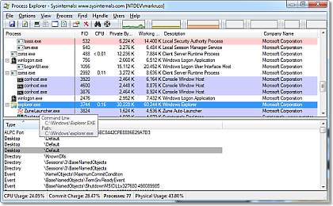
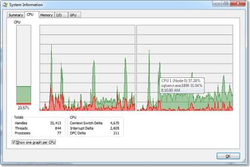

Программа Process Explorer для Windows (версия 15.04)Автор: Марк Руссинович (Mark Russinovich) Опубликовано 25 июля 2011 г. ВведениеВам когда-нибудь хотелось узнать, какая программа открыла тот или иной файл или каталог? Теперь у вас есть такая возможность. Программа Process Explorer отображает информацию об открытых процессом дескрипторах и загруженных им библиотеках DLL. Рабочая область программы Process Explorer состоит из двух окон. В верхнем окне отображается список активных процессов, включая имена учетных записей, которым принадлежат эти процессы. Информация, которая отображается в нижнем окне, зависит от выбранного режима работы программы. В режиме дескрипторов в нижнем окне отображаются все открытые дескрипторы выбранного в верхнем окне процесса, а в режиме библиотек DLL — все загруженные процессом динамические библиотеки и отображенные в память файлы. Помимо этого в программе Process Explorer также есть мощные возможности поиска, благодаря которым можно быстро узнать, у какого процесса открыт определенный дескриптор или загружена определенная библиотека DLL. Благодаря своим уникальным возможностям, программа Process Explorer полезна для разрешения проблем с версиями библиотек DLL и утечками дескрипторов, а также для понимания принципов работы ОС Windows и приложений.   УстановкаЗапустите программу Process Explorer (procexp.exe). В файле справки приводится информация о доступных операциях и об использовании программы. При возникновении вопросов или проблем посетите форум компании Sysinternals, посвященный программе Process Explorer. Дополнительные материалыНиже приведен перечень других программ для отслеживания дескрипторов и библиотек DLL, доступных на веб-узле Sysinternals:
Статьи в базе знаний Майкрософт, посвященныеВ приведенных ниже статьях базы знаний Майкрософт упоминается об использовании программы Process Explorer для диагностики или устранения различных ошибок: |